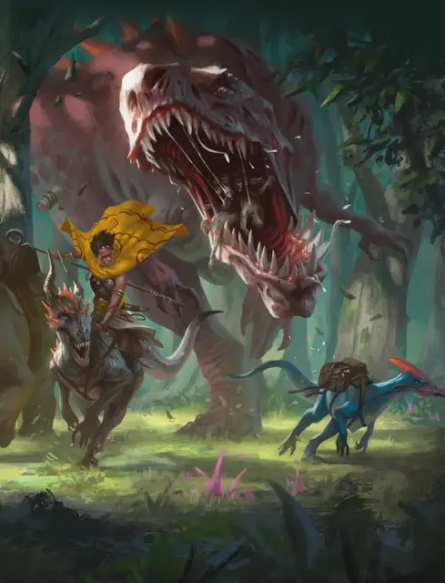

Тираннозавр зомби
Tyrannosaurus Zombie
Огромная Нежить, без мировоззрения

Класс Доспеха 11 (природный доспех)
Хиты 136 (13к12 + 52)
Скорость 40 футов
| мод | спас | ||
|---|---|---|---|
| СИЛ | 25 | +7 | +7 |
| ЛОВ | 6 | −2 | −2 |
| ТЕЛ | 19 | +4 | +4 |
| мод | спас | ||
|---|---|---|---|
| ИНТ | 1 | −5 | −5 |
| МДР | 3 | −4 | −4 |
| ХАР | 5 | −3 | −3 |
Иммунитет к урону яд
Иммунитет к состояниям отравление
Чувства тёмное зрение 60 футов, пассивное Восприятие 8
Опасность 8 (3900 опыта)
Бонус мастерства +3
Особенности
Изрыгнуть зомби. В качестве бонусного действия тираннозавр зомби может изрыгнуть зомби [zombie], который появляется в свободном пространстве в пределах 10 футов от него. Появившийся таким образом зомби действует по собственной инициативе. После того, как зомби изрыгнули, бросьте к6. При результате 1, у тираннозавра зомби заканчиваются зомби внутри его тела, и он теряет эту особенность. Если у тираннозавра зомби все ещё есть эта особенность, когда он умирает, 1к4 обычных зомби вылезают из его трупа в начале следующего хода. Эти зомби действуют по собственной инициативе.
Стойкость нежити. Если урон опускает хиты зомби до 0, он совершает спасбросок Телосложения Сл 5 + полученный урон, если только это не был урон излучением или урон от критического попадания. При успехе хиты зомби опускаются до 1.
Природа нежити. Зомби не нужен воздух, еда, питье и сон.
Действия
Мультиатака. Тираннозавр совершает две атаки: одну укусом, и одну хвостом. Он не может совершить обе атаки по одной и той же цели.
Укус. Рукопашная атака оружием: +10 к попаданию, досягаемость 10 футов, одна цель. Попадание: Колющий урон 33 (4к12 + 7). Если цель — существо с размером не больше Среднего, она становится схваченной (Сл высвобождения 17). Пока цель схвачена, она опутана, и тираннозавр не может кусать другую цель.
Хвост. Рукопашная атака оружием: +10 к попаданию, досягаемость 10 футов, одна цель. Попадание: Дробящий урон 20 (3к8 + 7).
Описание
У тираннозавра зомби есть пищевод, заполненный меньшими зомби, которые он может изрыгнуть. Эти зомби не находятся под контролем тираннозавра.
Этого огромного хищника боятся все остальные существа на его территории. Несмотря на его размер и вес, тираннозавр — отличный бегун. Он преследует всё, что может съесть. И есть не так много существ, которых он не пытался бы съесть. В поисках нормальной жертвы тираннозавр может перебиваться падалью, или любыми небольшими существами, пытающимися украсть его добычу.